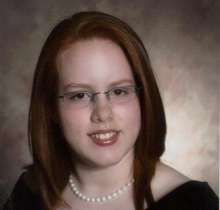

I am a senior here at Mizzou and I'm majoring in Digital Storytelling with a minor in Business. I have a husband and beautiful 8-year-old boy, along with two dogs and a cat; so we have a full house!
Going to school along with a full-time job keeps me pretty busy.My work here at the University has allowed me to gain some experience in HTML and CSS by maintaining the Cashiers website.
With any free time I have left, I also compete on two Rainbow Six Siege teams; one is a school affiliated team and another is an all-female team. Outside of those, I additionally try to stream on Twitch as content creation is another hobby I enjoy.
I am hopeful after the completion of my degree that I will be able to get a job in esports. Esports and content creation has grown to become a passion of mine that I want to share with others.
"Make it simple. Make it memorable. Make it inviting to look at. Make it fun to read. " Leo BurnettView my resumehere. 